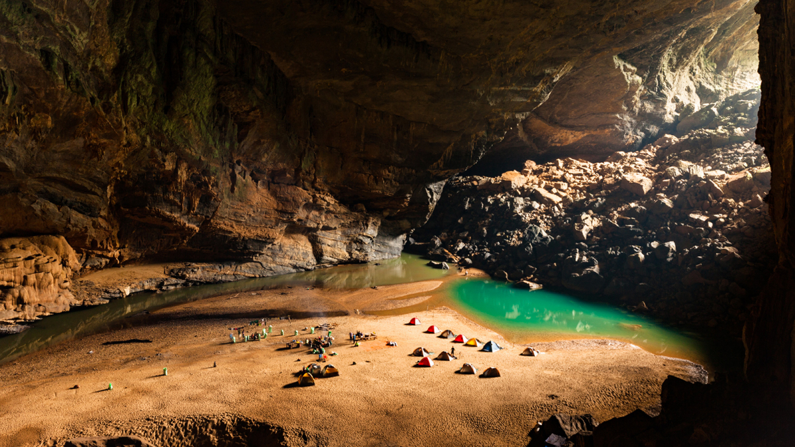

<h2>5. Пещера Шондонг, Вьетнам</h2>
Расположенная во вьетнамской провинции Куангбинь, пещера Шондонг считается самой крупной в мире. Чтобы посмотреть на пещеру, отправляй в Национальный парк Фонгня-Кебанг. Здесь можно увидеть проходы высотой до 200 метров и шириной до 150 метров.
</br>

</br>
Кроме того, путешественники остаются в восторге от подземной реки, а также растений под отверстиями в сводах пещеры, из-за которых внутрь пробивается солнечный свет.
</br>


